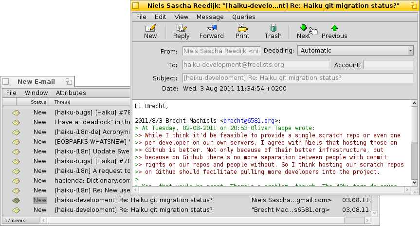
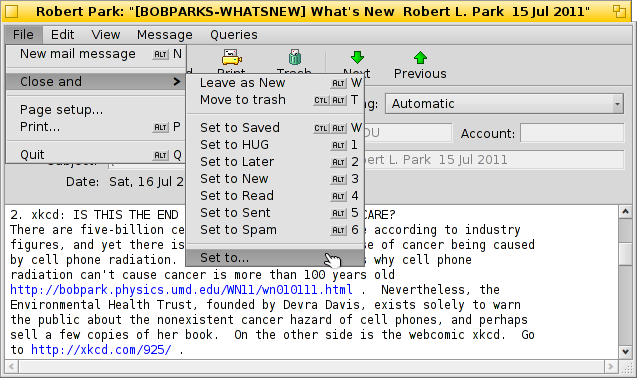
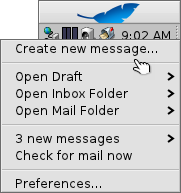
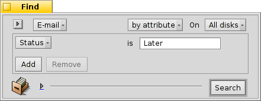
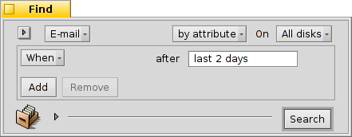
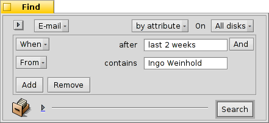
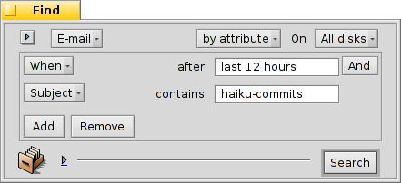

| Tabele |
|
Sisteme de pueste in Haiku Doprâ i stâts personalizâts Doprâ lis interogazions Altris sugjeriments |
Laboratori: gjestion de pueste
Chest laboratori al bute un voli su cemût gjestî la pueste sot di Haiku. Al presupon che i servizis di pueste a sedin configurâts ben cu lis preferencis E-Mail e che tu vedis familiaritât cu lis funzions di base de aplicazion Mail.
 Sisteme de pueste in Haiku
Sisteme de pueste in Haiku
Se tu rivis su Haiku di altris sistemis operatîfs, al è facil che tu sedis abituât a gruessis aplicazions come MS Outlook o Thunderbird di Mozilla. Tu âs di configurâlis inserint dutis lis informazions su direzions dai servidôr di pueste e vie indenant, e a dopraran lis lôr basis di dâts pai contats. A varan cure di inviâ e recuperâ la pueste e archiviâle in cualchi grues file speciâl.
Cambiâ il to client di pueste al pues jessi fastidiôs cu lis proceduris di es/importazion. Ancje doprâ plui di un client in paralêl par verificâ ce altri che al è disponibil, nol è cence comediis.
Il sisteme de pueste di Haiku al è diferent. Al scompon dut in piçui modui separâts.
Al è il mail_daemon che si ocupe des comunicazions cui servidôrs di pueste. Lis preferencis E-Mail a son il pont centrât dulà configurâ i tiei accounts e-mail e trop dispès controlâju, par esempli.
Ogni messaç che al ven recuperât o inviât al ven salvât come singul file di pueste, cu lis sôs informazions di intestazion (come mitent, ogjet, date) e il stât (come Gnûf, Rispuindût, Inviât) tai atribûts BFS. Chest al permet la lôr ricercje/filtrament cu lis sveltis interogazions di Haiku.
Cun ogni e-mail intun file separât, visualizâlis al devente facil tant che navigâ intune cartele (o il risultât di une interogazion) di imagjins cun ShowImage. Se tu lassis viert il barcon dal Tracker, tu viodarâs che la selezion dal file si spostarà cuant che tu dopris i botons precedent/sucessîf su Mail.
Viodût che a son files indipendents, doprâ un visualizadôr diviers di Mail di Haiku nol causarà nissun probleme.
Te stesse maniere, la creazion di un gnûf messaç al prodûs dome un altri file che al ven consegnât al mail_daemon e chest si ocupe di inviâlu. La gjestion dai contats e ven lassade ae aplicazion People.
In pocjis peraulis, dulà che altris clients di pueste a fasin dut, partint de comunicazion cui servidôrs di pueste passant pal furnî une visualizazion de pueste e struments par cirî e filtrâle, Haiku al dopre une cjadene di piçui struments e la gjestion dai file gjenerâl:
Il mail_daemon par recuperâ/inviâ la pueste e salvâle tant che files normâi.
I barcons di Tracker e lis interogazions par cjatâ e mostrâ i files des e-mails.
La aplicazion Mail par visualizâ i files di pueste e creâ gnûfs messaçs, fasint afidament ae gjestion dai contats a nivel di sisteme midiant la aplicazion People.
Soredut, doprâ il Tracker e lis interogazions par gjestî lis emails e je une idee vincente. Tu puedis trasferî il vuadagn di esperience a cualsisei probleme che tu puedis frontâ cui files. Sedino imagjins, musiche, videos, contats o cualsisei altri document, doprâ Tracker al è il cûr di dute la gjestion dai files.
Miorâsi in cualsisei di chestis areis dal sisteme al zove no nome pe gjestion de pueste, ma par dutis lis aplicazions che lis doprin.
Doprâ i stâts personalizâts
Cuant che tu sgarfis tes tôs e-mails a pene rivadis, magari tu desideris tornâ a cualchidune di chês plui indenant, salacor par pensâ a fonts. Ma man a man che tu dopris il menù di Mail par tignîlis te tô interogazion "Gnûfs messaçs", cul timp a lâ la robe e pues intassâsi in cheste maniere...
Pal sigûr une soluzion e podarès sei chê di scomençâ une rispueste e salvâle come stampon. Ma se no tu programis di scrivi une rispueste e tu desideris dome tornâ a leile plui indenant, chest nol è ideâl.
Al è miôr doprâ par creâ un gnûf stât e doprâ chel par categorizâ la tô pueste. Par esempli, tu podaressis clamâ il stât "Aprofondî", e cussì interogâ chel cuant che tu varâs plui timp.
Opûr tu puedis doprâ stâts diferents par specifics progjets. Par esempli, o ai creât un stât "HUG" (par "Haiku User Guide") e sot di chel o colezioni ogni e-mail che e pues influençâ i contignûts de vuide utent, come i messaçs di consegne (commit) su modifichis dal codiç sorzint, che magari al modifiche o al introdûs cualchi funzionalitât, o cualsisei altre robe che o sint che e podarès miorâ la vuide utent.
Dut câs, cîr di tignî il non dal stât curt. Cussì al sta simpri te largjece normâl de colone "Stât" in Tracker.
No tu âs di vierzi une e-mail cu la aplicazion Mail par cambiâ il so stât. Cui components adizionâi di Tracker Mark as Read e Mark as... tu puedis selezionâ cualchi file di pueste e cambiâ il lôr stât cence trai un colp.
Doprâ lis interogazions
Sigûr, tu specifichis une cartele dulà archiviâ dute la tô pueste, tu puedis vierzile et voilà, lì e je dute la tô pueste. Ma cul timp a lâ la cartele e devente straplene, mostrâle dute al pues tirâle a dilunc par vie di miârs di files e dai lôr atribûts che a àn di sei analizâts e ordenâts. Cun di plui, la plui part des voltis no ti impuartarà pardabon di e-mails vecjis di doi agns di princips nigerians e dai lôr problemis di ereditât...
Interogazions, in socors!
Doprant lis interogazions, tu puedis strenzi la visualizazion des tôs e-mails. In realtât, la icone de cassele postâl tal Deskbar e dopre lis interogazions.
Il sot-menù al fâs une interogazion pal stât "Draft", Che al ven configurât di Mail cuant che tu salvis un messaç.
e a son dome colegaments a cartelis normâls (e no tant utii secont di me).
Il sot-menù al è popolât di une interogazion pe pueste cul stât "New" vâl a dî Gnûf (a proposit, la stesse interogazion e ven doprade par cambiâ la icone de cassele di pueste, cussì di mostrâ cualchi letare dentri).
Tu puedis ancje zontâ lis tôs interogazions personâls (o cartelis, aplicazions, scripts e v.i.) a chel menù contestuâl, metintlis o metint un lôr colegament in ~/config/settings/Mail/Menu Links.
Esemplis di interogazions
Achì al è cualchi esempli di interogazions utilis:
|  |  |
| Chest al cjate dutis lis e-mails cul stât personalizât "Later". | Chest al cjate dutis lis e-mails dai ultins doi dîs. |
|  |  |
| Chest al cjate dutis lis e-mails di Ingo Weinhold des ultimis dôs setemanis. | Chest al cjate dutis lis publicazions che a rivin de liste des consegnis (commit) di Haiku des ultimis 12 oris. |
Altris sugjeriments
Se no tu salvis une interogazion tant che "Query" ma come "Query template", se tu le clamis no tu visualizarâs il barcon dai risultâts, ma il barcon Cjate... In cheste maniere tu puedis scambiâ cun facilitât la stringhe di ricercje pal ogjet o mitent, par esempli, o cambiâil limit di timp di "2 days" (2 dîs) a "3 days".
Ativant il "filtri pe ricercje datilografant" tes preferencis di Tracker ti permet di filtrâ ancjemò di plui il risultât di une interogazion in mût svelt. Dispès al baste interogâ une ricercje des e-mails dai ultins 3 dîs e filtrâ la ricercje datilografant partint di lì. Il grant vantaç al è che no tu âs di specificâ in maniere esate cuâl atribût cirî, viodût che ducj i visualizâts a vegnin considerâts dilunc il filtrament.